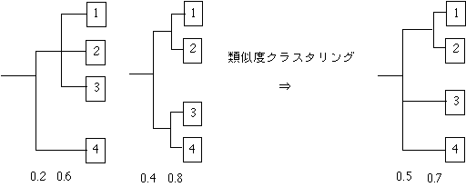

（２９）類似度クラスタリングツール
マ シ ン：PSI-II
環 境：SIMPOS
言 語：ESP
ソース量：2 MB
文 書：なし
概要
複数候補に対する分類木を複数ユーザの入力した類似度から合成し提示する環
境を提供する。
機能
知識獲得においては複数の知識を矛盾なく合成して一つの知識にする手法が必
要である。この類似度クラスタリングツールは、知識獲得支援グループウェア
ＧＲＡＰＥの部分モジュールとして作成されたもので、複数ユーザが同時に入
力した類似性の値から平均的な類似性を抽出し、そこから分類木を作成する。
また必要に応じて合成された分類木を表示する。平均的な類似性から分類木を
作成する際に矛盾が起きた場合、類似性のもっとも高いノード間を優先的に結
合するという手法をとった。
分類木の合成例

参考文献
- 上田晴康 他．知識獲得支援のためのグループウェアＧＲＡＰＥにおける
仮説構造化．第１１回知識・知能システムシンポジウム、1990.
- 上田晴康 他．知識獲得支援のためのグループウェアＧＲＡＰＥとその実
現について．人工知能学会全国大会（第４回）論文集、1990.
- H.Ueda et al. GRAPE:Knowledge acquisition support groupware for
the classification-choice problem Proceedings of the Associated
Symposium of ETFA '92 on the Learning Process and Knowledge
Acauisition,1992,(in printing).
ＦＴＰ
- 類似度クラスタリングツール [406K]

www-admin@icot.or.jp